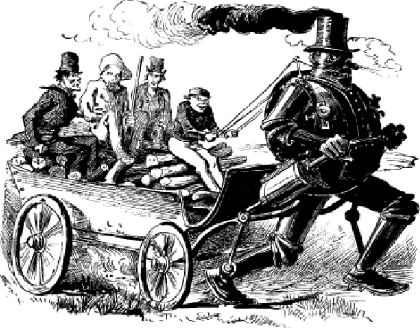
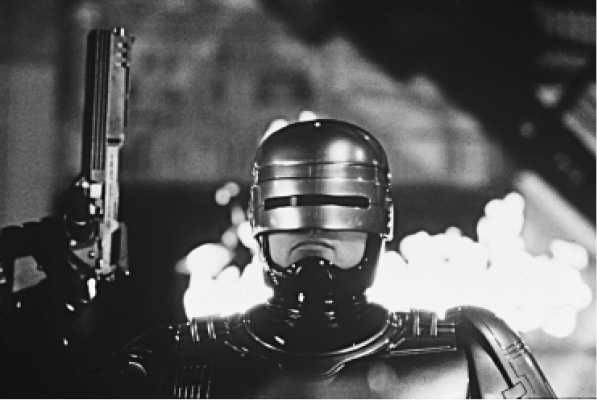

“机器人”这个词语1920年首次出现在捷克作家卡瑞尔·恰佩克的剧作《R.U.R.：罗赛姆的通用机器人》中，情境性地包含了重体力劳动甚至奴役之意。随着这个词的进一步运用，它最终用来指自足的、也许是远程控制的“模拟人类行为并可能在外观上类似于人的人造装置”。在1920年之前，类似机器人的制造品可以追溯到叫作自动机或者人形机械的古老装置。这些装置出现于19世纪的文学作品中，如E.T.A.霍夫曼的小说《沙人》，埃德加·爱伦·坡对约翰·梅尔策尔弈棋机的赞叹，又如爱德华·布尔沃–利顿的《即将来临的种族》（1871）设想的家务自动机。最早的此类描述要追溯到爱德华·S.埃利斯的《巨大的猎人，或大草原的蒸汽人》（1865），小说中的机器高达10英尺，完全由钢铁制成，内部安装了蒸汽锅炉。根据现代的标准来看，这种机器非常粗糙，甚至还戴着维多利亚时代绅士的“烟囱礼帽”。埃利斯的机器是由蒸汽驱动的，它同时具有运动能力、人类外形和代马拉车（通过缰绳来指挥）这三个特点。
机器人出现在20世纪作品中之后，大量的核心议题也随之凸显出来。西德尼·福勒·赖特的《自动机》（1929）呈现的未来面目狰狞，作为进化的“胜利者”，自动机取代了人类。在《大都会》中，发明家罗特旺制造了小说角色玛丽亚的复制品。在《R.U.R.》中，机器人接管了全球经济。人类被机器人取代或复制是机器人叙事中的两大担忧，其本质都是人类惧怕失去自己的中心位置。菲利普·K.迪克的小说《仿生人会梦见电子羊吗？》（1968）是电影《银翼杀手》的脚本来源，这部小说的核心主题就是第二个担忧。有机的人形机械被设计成火星殖民地的劳工，但是在世界末日大战后，他们摆脱了奴隶制，回到了遭到破坏的地球。里克·德卡德在为旧金山警方追捕仿生人的过程中，不断地质疑身份的本质。小说从第一页起就展示了一个在许多方面都已机械化的世界，此时甚至连国教也以一种织物处理工艺命名，叫“丝光教”。那么，如何区分复制的人与真正的人类？德卡德没有回答这个问题，甚至不怎么愿意相信复制人不是人类。同样，在《R.U.R.》的第三幕中，两个机器人开始展现出了人的情感，因此也许我们应该担心第三种情况，即因为机器人存在了情感，所以最终将无法区分机器人与人类。

图10 爱德华·S.埃利斯《大草原的蒸汽人》（1865）的插图
艾萨克·阿西莫夫一直对机器人持有积极的看法，他在20世纪40年代开始出版机器人故事，不遗余力地反对技术恐惧症——他称之为“弗兰肯斯坦情结”——并提出了著名的机器人学三法则：
一、机器人不可以伤害人类或者以不作为的形式让人类受到伤害。
二、机器人必须服从人类的命令，除非该命令与第一法则相冲突。
三、机器人必须保护自己，除非第一、第二法则不允许它这么做。
阿西莫夫理性地把机器人描述为“机器而非隐喻”，这种简单的策略改变了机器人在科幻中的面目。阿西莫夫除了致力于从技术角度表现机器人，同时还拓展了机器人作为工人的转义范围。《两百岁的人》（1976）中隐含了对种族问题的看法，是个特别有趣的范例。和阿西莫夫后来所写的机器人故事一样，这个故事里的安德鲁·马丁一上来就被描写得与人类别无二致，读者要到后来才能意识到他其实是一个机器人。只有他那缺乏表情的脸才暗示了他的机器人身份。在整个故事中，机器人和非裔美国人之间有一个连续的类比。所以，在故事结尾，当安德鲁努力地想要别人承认他的人类身份时，这里面便蕴含了一种对种族主义的批判和人文主义的情怀。小说出版时正值美国建国两百周年，这尤其凸显了这一类比的意义。
虽然赛博格和机器人之间不存在截然的界限，赛博格作为一种人机杂合的存在，与机器人还是有区别的。赛博格是一种控制论机体，即人机一体的系统，这个词是在1960年发明出来的，与外太空生存语境相关。马丁·凯丁的小说《赛博格》（1972）的情节是一个飞行员在飞机失事时严重受伤，其躯体由政府秘密战略行动局重组，条件是他必须为政府服务。小说推断控制论机体在医疗领域的应用将变得极其普遍，并且讨论了它在现代政治权力结构中的作用。1987年的电影《机械战警》主题与此相似，但比小说要更加有名。影片中，一名底特律警察在经过掌控市警署的奥姆尼消费品公司的重组之后，以机械战警的身份上街巡逻，充当不可抗拒的终极执法官的角色，其形象类似于全副武装的牛仔。

图11 保罗·费尔赫芬《机械战警》的剧照（1987）
不幸的是，试验出了错。虽然《弗兰肯斯坦》没有塑造过赛博格，但它设定了相关的叙事范式；电影中的赛博格演变成了弗兰肯斯坦式的怪物。这位机械战警的原始记忆没有被抹除，所以在电影的后半部分中他试图向“谋杀”他的人复仇。
赛博格主题电影中最有名的是阿诺德·施瓦辛格主演的“终结者”系列。该系列首部电影的情节背景设定在当前（1984年），从未来（2029年）穿越过来两个人——终结者和他的对手。终结者内部是武装到了牙齿的杀戮机器，外表覆盖着一层活的人体组织，也就是说终结者是一个充当杀手的生化人。在唐娜·哈勒维看来，他因为具有自我修复的能力，所以代表着“自足的、自我生发的工具，可以精确地批量生产”。这部电影还打破了动作片的常规，因为终结者最终被其准备加害的女性所击败。
唐娜·哈勒维在她1985年的文章《赛博格宣言》中提出了重要的赛博格理论，她把赛博格概念设定为打破虚假的二元对立——如人与机器泾渭分明的界限——的理论工具。她引用乔安娜·拉斯等人的女性主义科幻作品，赋予了赛博格核心文化概念的地位，因为赛博格代表了我们现代性存在的杂糅本质。她提出，《银翼杀手》中让德卡德又爱又怕的雷切尔，就是“赛博格文化中惧、爱、惑的形象化”。
玛吉·皮尔西1991年的小说《他、她和它》（非美国版又名《玻璃身体》）延续了哈勒维用赛博格来审视社会问题和性别问题的策略，其背景设定为2059年美洲的一块犹太飞地。小说中，名叫约得（希伯来文第十个字母）的非法赛博格被创造出来，用以保护这块定居地，这个情节设计有其历史背景——16世纪的民间传说提到的泥人就是用黏土创造出来保护布拉格的犹太区的。皮尔西在概述泥人故事的章节中插入了回顾约得和主角希拉之间关系发展的内容。赛博格能够思考、表现出快乐，甚至认为自己所处的文化传统是可憎的“怪物”，所以他区别于人的异质性被大大削弱了。约得提到了《弗兰肯斯坦》，这表明他认为自己的受造方式也等同于一种出生。事实上，比起没有任何禁忌的完美的理性生物，他作为半人工生物的性质表现得并不多，因为他的机械性的一面基本上没有外露。
以人类的形象来塑造机器人和赛博格，让人想起科幻作品中屡屡出场的解剖、拆分人体的技术，它的目的是重建或者改造人类。J.P.泰洛特等批评家指出，科幻中的这个技术主题可以追溯到《弗兰肯斯坦》，布赖恩·奥尔迪斯等作家将该小说视作科幻的原型文本。弗兰肯斯坦用死尸的器官组成了活人，违背了文化禁忌，他创造的“怪物”（或称“恶魔”）并没有名字，所以人们对后者的联想总是和弗兰肯斯坦联系在一起的。这个具有实验性的文本以此表达了对创造生命的矛盾情感。创造者和创造物之间视角的转换只是加强了这种效果。在早期关于生物工程的科幻叙事中，实验者和实验对象之间的这种二元对立最终害死了实验者，这样的例子有杰基尔和海德 [10] 、韦尔斯的莫罗博士和他的兽人、迈克尔·克赖顿《终端人》（1972）中的外科医师和哈里·班森。在最后这部小说中，人体内的植入式电极受附近计算机的控制，意味着班森只能牺牲自己的自由来接受治疗。植入物越是精密，接受植入后人格改变的程度就越大。1990年的电影《全面回忆》（根据菲利普·K.迪克的小说改编）是这种狂想达到极致的表现，在影片中，植入的记忆被当作虚拟旅行商品出售。但是，当道格拉斯·奎德去珍忆公司接受“治疗”时，却发现他早已让别人抹去了自己的记忆。在这之后，当他从自己的另外一个人格豪泽那里接收到一个影像，化装成女人进入火星时，他的身份就分裂为两个了。一直到电影结束，他都无法确认自己属于哪个人格。